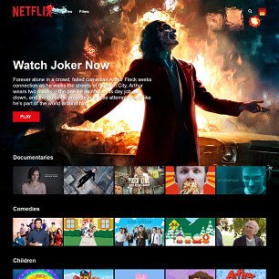
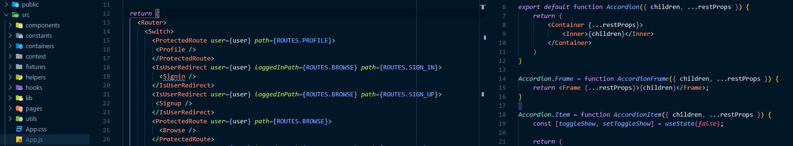

Reusable React
This project recreates the primary Netflix user interface using the React JavaScript library. Unauthenticated users land on the homepage which features several reusable compound styled components - Opt-In Form, a service benefits Jumbotron, and a FAQ accordion. Once a user signs up for an account, they can log in to authenticate and will be redirected to the browse page automatically. Finally, the browse page functions similar to commercial Netflix (sorry though, no free feature-length movies 😖).
This project solves several common problems in software development. Components are reusable which keeps the code DRY and maintainable. The compound nature of the subcomponents and styling makes the API flexible for the development team. Properties can still be passed in to the components through the use of the JavaScript spread operator. These passed in properties can be used with the coupled styled-components library to turn styling on and off using template literals.
Modern features of the React environment are used to extend the functionality and reduce code complexity. React hooks are used to hook into the lifecycle of the components which minimizes the need for class-based components. State is included in the functional components by using the useState and useContext hook. By using the Context API, I was able to share State across components without prop drilling (simplifies the code). The Context API allows us to avoid using more complex state management dependencies such as Redux.
Google Firebase is used on the backend to provide user creation and authentication, while Firestore also provides a solution to store database information. Through the use of a customer hook, I was able to bring Firebase into React Context and the React Router library to create protected routes so unauthenticated users are redirected to sign up or log in prior to accessing subscriber content.
React allows us to extend application functionality and reduce code complexity.